[论文笔记-ccs12]Aligot
Aligot
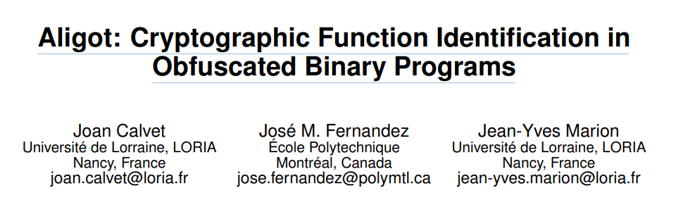
Joan Calvet, José M. Fernandez, and Jean-Yves Marion. 2012. Aligot: cryptographic function identification in obfuscated binary programs. In Proceedings of the 2012 ACM conference on Computer and communications security (CCS '12). Association for Computing Machinery, New York, NY, USA, 169–182. DOI:https://doi.org/10.1145/2382196.2382217
研究的问题： 识别混淆后的二进制文件的密码函数
特色：
- 之前的静态分析检测常量或machine language instructions，不适用于混淆后的
- 检测密码函数的I/O关系，抗混淆（即使混淆后，输入输出也是可知的）
解决方法：
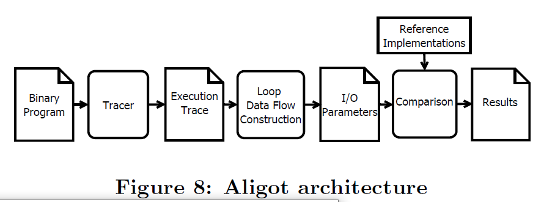
I/O关系对足够确定多数密码函数
-
收集目标程序的执行路径(程序在系统上运行期间所做的一系列操作)
Windows x86 Pin
收集 dynamic instruction D，用元组表示,包括以下部分：
- 内存地址A[D]
- 在A[D]执行的机器指令I[D]
- I[D]读写内存地址Ra[D],Wa[D]
- I[D]读写寄存器Rr[D],Wr[D]
执行路径T便是一系列动态指令序列D1……Dn
T/ins是机器指令序列，T/Ins = I1…… In 如果对任意k 属于[1，n]，使得I[Dk] = Ik
-
从执行路径中提取密码相关代码以及I/O参数：
通常，可以将代码划分为函数，但是函数的概念也只是基于编译器特性（调用约定、prologue和epilogue code等）的一种启发式定义，而这在混淆后的代码中是不可靠的。因此为混淆后的加密代码构建了特定的抽象。
循环是加密函数经常用到的，但也不只加密函数会用到。所以需要准确定义加密代码中的循环
simple loop定义
比如下图中a表示混淆工具control-flow flattening,每次循环可能执行不同逻辑。
b表示一种可以被用作混淆的编译器优化技术unrolling，三条同样的指令执行了三次。
采用instruction-centric loops定义循环：机器指令的重复。所以a不应被视为循环，b应该被视为循环。
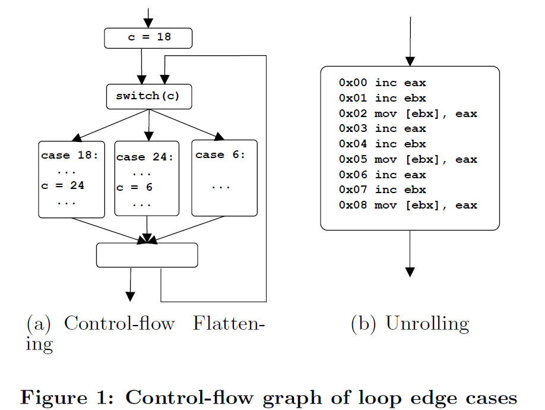
nested loop定义
比如图a的情况，B作为内嵌的循环可能不会与外层循环循环同样的次数，这样外层循环就不会被视为循环，但实际上外层循环应该被视为循环。因此检测到循环实例后就会用循环标记代替其代码，图b可以被替换为AXCAXC
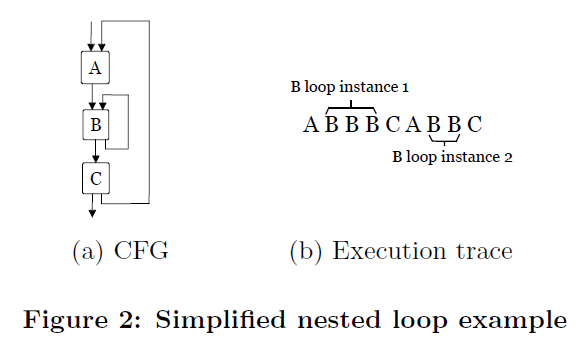
循环识别算法：
依次处理执行路径的机器指令，并将其存入链表history的尾部。
假设history中有指令I1,I2,I1,I3，现在正要处理的指令为I1，该指令在history中出现两次（都可能是loop的开始），因此创建两个loop实例L1,L2，指针指向下一条待执行的指令。然后将I1加入history中。
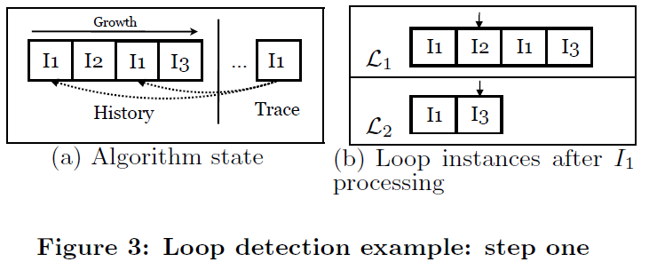
再假设下一条指令是I3.此时L1就会被舍弃，因为其期望的指令不是I3。而L2的指针继续移动，指向I1。
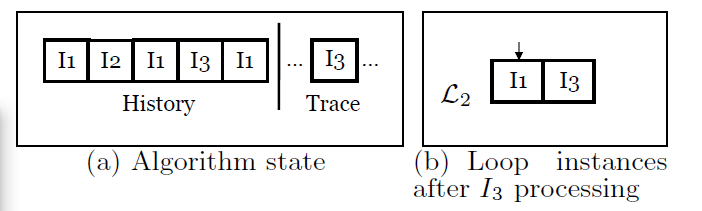
此时可以确定L2已经循环了两次，因此将其替换为循环标记符X属于Lid。假设下一条指令为I4，而L2等待的指令为I1，因此L2从running loop instances中移除并register
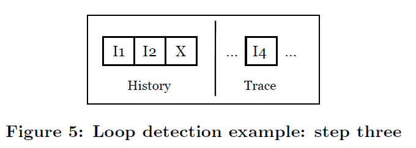
参数：循环实例的参数是高级函数实现的参数对应的低级
- 属于L的相同参数的bytes要么在内存中相邻，要么同时在同一个寄存器中
- 属于L的相同参数的字节由BODY [L]中的相同指令以相同的方式(读或写)操作
- 属于L的输入参数的字节被L中的代码读取，而属于L的输出参数的字节被L中的代码写入
**参数收集算法：**先根据上述前两个条件收集参数，然后根据第三条将参数分为输入输出。然后确定参数的值：输入参数为第一次被读取的值，输出参数为最后一次被写入的值。最后，得到INm(L) and INr(L)(分别为内存和寄存器中的值）,OUTm(L) and OUTm(L)
比如：一次一密xor的程序P
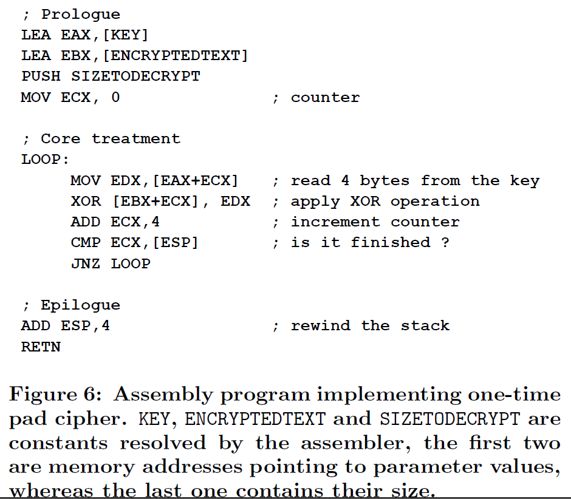
首先，收集程序P的执行路径，然后识别循环体。检测到了一个loop实例。
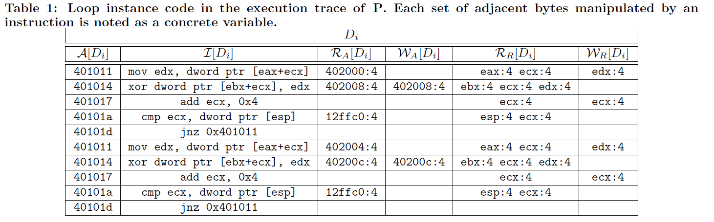
收集循环的参数，同时还提取一些与这些实现有关的参数，将在最后进行对比时发挥作用。
- eax:4,ebx:4,esp:4：内存地址
- ecx:4：counter value
- 12FFC0（起始地址）:4（字节数）：与sizetodecrypt循环前的初始化本地向量有关
- edx:4：中间存储器
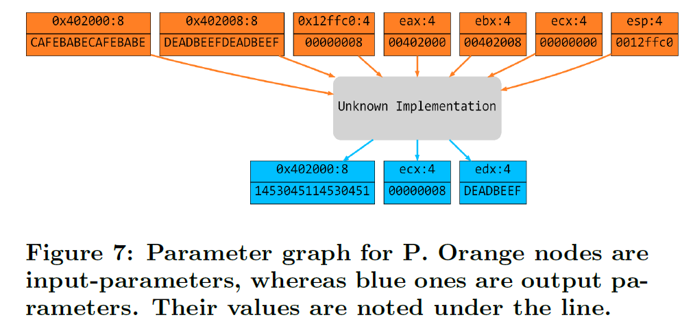
loop data flow：我们认为每个可能的加密实现都包含一个循环。然而，密码函数实际上可以由几个非嵌套循环组成，例如RC4[34]。因此，单靠上述的循环不足以完全捕获它们，所以使用data flow对参与相同加密实现的循环实例进行分组。
-
定义：和def-use chains差不多，如果L1的输出参数用作L2的输入参数，那么称循环实例L1和L2连通。为了简单起见，只考虑内存参数，因为寄存器参数需要在循环实例之间的顺序代码中进行精确的污染跟踪。实际上，我们的假设是，对内存中输入和输出的所有处理都是通过循环处理的。
在不同的密码函数之间组合的情况下，即一个函数的输出用作另一个函数的输入，它们将被分到相同的loop data flow中，因此需要考虑所有子图。
-
与已知密码函数（pycrypto）比较：如果loop data flow与密码函数有同样的输入输出，则认为实现了同样的密码函数。
首先，生成所有可能的I/O值，比如上例有5个长度为4，22个长度为8的值。（实际应用中，逆向分析者可以去掉明显依赖于实现的参数，比如内存地址）
然后，对每个加密参考实现程序Pf，从生成的可能的输入值中选择合适的值输入。Pf如果只需要定长的参数，便只选择正确长度的参数
最后，运行Pf，如果其输出的值在之前生成的可能的输出值中，便成功找到。
结果：
TEA特征：常量delta，标准实现为0x9E3779B9
MD5：输入被分为512bit的块
RSA:模乘运算，用到loop，Montgomery算法优化模乘运算、deconding routine(PolarSSL)
样本：
B1：TEA用MSVC编译，没有优化
B2：和B1类似，但delta用以下两条指令混淆，因此算法语义一样但是delta不再是静态可见常量
1 | mov reg,delta; |
B3:RC4用MSVC编译，没有优化
B4:AES(OpenSSL)
B5:B4用AsProtect打包
B6：md5（OpenSSL)
B8:RSA(PolarSSL),AsProtect
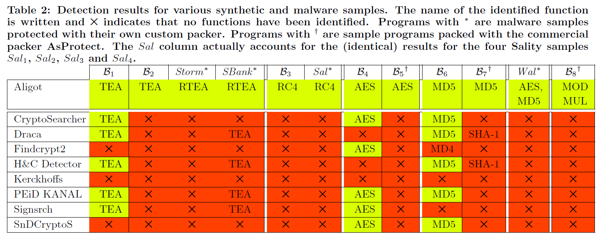
B1有的工具没有识别出TEA，可能是其本身没有实现该算法的功能。但是B2只有Aligot能识别，其余工具可能只是基于静态delta的值
恶意软件对TEA作了些修改，再实现之后命名为Russian-TEA，也可以成功识别。
SBank也是类似，但是因为有静态delta，所以其余工具可以识别
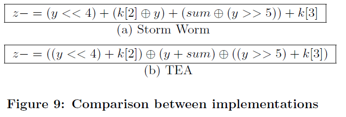
性能：
-
自己的样本都基本在20min以内
-
trance size并不总是意味着更长处理时间。
-
如果loop很少，那么history更大，性能会更差
-
比较环节，性能主要取决于LDP的数量以及参数数量
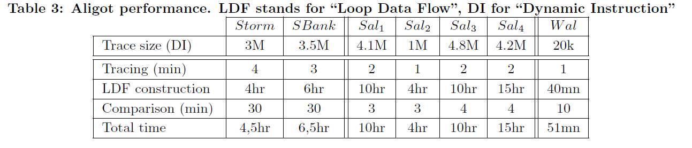
不足：
- 局限于特定的执行路径（一个程序P，输入为K，C（密文），输出C’(明文)，但不是P的所有执行路径都实现了密码函数，但确定具体的执行路径由逆向人员完成）
- 需要密码函数的参考实现
- 参数编码后便难以识别